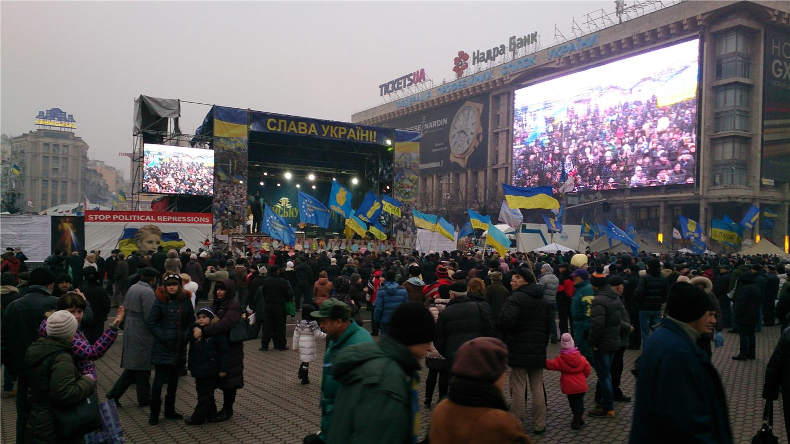

젤렌스키, ‘드론 설계자’ 국방장관 경질… 키이우 사흘째 항의 시위
볼로디미르 젤렌스키 우크라이나 대통령이 개각을 단행하며 드론전 프로그램을 이끈 국방장관을 경질했다. 결정 이후 키이우 도심에서는 사흘째 항의 시위가 이어지고 있다.
조계현 기자 · 2026.07.23
橋국제

젤렌스키 대통령이 정부 개편의 일환으로 6개월간 재임한 미하일로 페도로우 국방장관을 해임했다고 외신들이 전했다. 페도로우는 우크라이나의 정교한 드론전 도입을 밀어붙인 인물로, 전황을 유리하게 돌린 핵심 관료로 평가받아 왔다.
광고 문의 · 300×250경질 소식이 알려지자 키이우 중심가에는 1천 명이 넘는 시민이 모여 우크라이나기와 유럽연합기를 흔들며 항의했다. 시위대는 장관의 복귀를 요구하는 구호를 외쳤다고 전해졌다.
페도로우는 자국 군 총사령관을 겨냥해 “러시아를 비대칭적으로 이기는 법이 아니라 나라를 분열시키는 법을 찾아냈다”고 비판했다. 자유시보는 젤렌스키 대통령이 총사령관 교체 가능성까지 시사했다고 보도했다.
이번 개각으로 의회는 나프토가스 최고경영자 출신인 세르히 코레츠키를 신임 총리로 승인했고, 보안국(SBU) 수장이 국방장관 대행을 맡았다. 전시 지도부 재편이 전쟁 수행에 어떤 영향을 줄지 주목된다.
華橋時報는 특정 진영을 지지하지 않으며, 사실 관계를 중립적으로 전한다. 전시의 인사 교체를 둘러싼 내부 갈등과 시민의 반응은, 전쟁이 전선뿐 아니라 사회 내부에도 긴장을 남긴다는 점을 보여 준다.
출처·참고 (사실 확인용 — 본문은 직접 재작성)
· 자유시보
· 자유시보